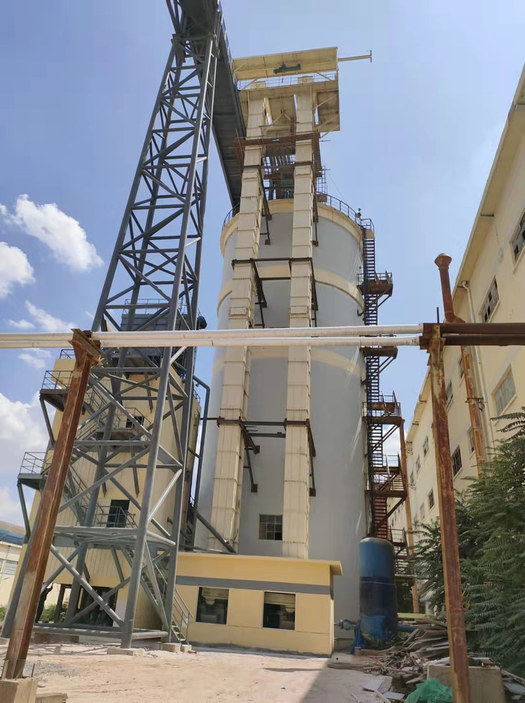

Tianyi Machinery recently completed the supply of a complete bulk material conveying system for a zinc-indium smelter in China. The scope included en masse chain scraper conveyors, bucket elevators, and a full set of matching industrial valves and dampers. This article explains the process requirements, equipment selection, and how the system was engineered for reliable 24/7 operation.
In this article
1. Project background and process flow 2. Material characteristics in zinc-indium smelting 3. Equipment scope 4. Engineering design highlights 5. Site installation 6. Commissioning results1. Project Background and Process Flow
The client operates a large non-ferrous smelter producing refined zinc and recovering indium, germanium, and other valuable by-products. A capacity expansion required a new bulk handling line to connect the roasting, leaching, residue treatment, and indium-recovery sections.
The conveying route had to handle both hot, abrasive calcine and finer residue materials, often at elevated temperature and with acidic or alkaline surface films. Because the smelter is in a coastal industrial zone, corrosion protection and dust containment were also critical.
2. Material Characteristics in Zinc-Indium Smelting
Successful equipment selection starts with understanding the materials. In this project the main conveyed products included:
- Zinc calcine: Hot, abrasive roasted concentrate; particle size up to 10 mm, bulk temperature up to 200 °C in some streams.
- Leach residue and jarosite: Fine, moist residues with acidic surface films; prone to buildup and dusting.
- Indium-bearing fume and neutral leach residue: Low-density, fine powders with economic value; spillage and cross-contamination must be minimized.
These characteristics demand equipment that is dust-tight, abrasion-resistant, temperature-tolerant, and easy to clean between product changes.
3. Equipment Scope
Tianyi Machinery supplied the following main and auxiliary equipment for the new conveying line:
- En masse chain scraper conveyors: Used for horizontal and inclined transfer of calcine and residue. Fully enclosed casing prevents dust emission; scraper flights handle mixed particle sizes without segregation.
- Bucket elevators: Vertical lifts from ground storage to process towers. Belting or chain type selected according to temperature and capacity; buckets matched to material flowability.
- Industrial valves and dampers: Slide gates, flap valves, and three-way diverters for flow isolation, distribution, and emergency shut-off between storage silos and process vessels.
- Auxiliaries: Feed chutes, discharge spouts, inspection doors, access platforms, and local control panels.
4. Engineering Design Highlights
4.1 Abrasion and corrosion protection
All wear surfaces in contact with calcine and residue were either lined with wear-resistant steel, hard-faced, or constructed in stainless steel where chemical attack was expected. Bolted replaceable liners were included at high-wear zones to simplify future maintenance.
4.2 Dust-tight casing
En masse conveyors are naturally enclosed, but smelter duty requires extra attention to flange gaskets, shaft seals, and access-door seals. Every joint was gasketed and pressure-tested before shipment to minimize fugitive dust.
4.3 Thermal expansion and support
Hot calcine streams cause casing expansion. Expansion joints and guided supports were built into the route so thermal movement does not overload the structure or disturb seal integrity.
4.4 Redundancy and clean-out
Critical sections were duplicated so one line can be cleaned or repaired while the other keeps the plant running. Clean-out doors and drain points were positioned at every low spot to prevent acidic residue buildup.
5. Site Installation
The photograph below shows the vertical bucket elevator and supporting tower installed at the smelter site. The elevator lifts material from ground-level receiving to the upper process floor, feeding the downstream en masse conveyors and valves.

Project SiteTianyi's site team supervised alignment, belt/chain tensioning, and no-load running tests before handover. All drives were checked for vibration, temperature, and current draw against the design values.
6. Commissioning Results
After mechanical commissioning and load testing, the system met the client's specified capacity and dust-emission targets. Key results included:
- Stable capacity: Continuous feed to the roaster and leaching sections without bottlenecks.
- Low dust emission: Enclosed conveyors and sealed chutes kept fugitive dust well below the site limit.
- High availability: Redundant lines and replaceable wear parts minimized unplanned downtime.
- Material compatibility: No corrosion-related failures after the first six months of operation.
Frequently Asked Questions
What equipment did Tianyi supply for the zinc-indium smelting project?
An en-masse chain conveyor, bucket elevators, and valves: the main and auxiliary machines for the smelter's bulk material handling line.
How does Tianyi handle abrasive and corrosive smelter material?
With abrasion- and corrosion-resistant liners, sealed casings, and material choices matched to the smelter's hot, aggressive duty.
What are the engineering highlights of the smelter conveying system?
Dust-tight casing, thermal-expansion accommodation in supports, redundancy on critical lines, and easy clean-out points for maintenance.
Can Tianyi build conveying systems for non-ferrous smelters?
Yes. Beyond zinc-indium, we engineer handling systems for various non-ferrous and ferrous smelting operations.
What were the commissioning results?
The system achieved stable continuous handling with minimized manual intervention and a clean, compliant transfer environment.
Need a Conveying System for Your Smelter?
Tell us your material, capacity, temperature, and layout. Tianyi Machinery designs complete bulk handling systems for non-ferrous smelters, including chain conveyors, bucket elevators, valves, and auxiliary equipment.
Request a Project Quotation